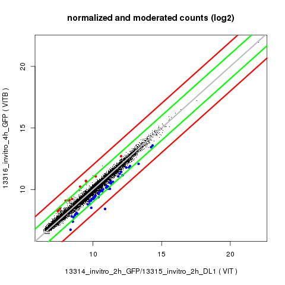

Samples used for normalization and dispersion estimates:
13314_invitro_2h_GFP
13315_invitro_2h_DL1
13316_invitro_4h_GFP
13317_invitro_4h_DL1
VIT
VIT
VITB
VITC
Dispersion was estimated with settings: 'blind','fit-only'
The 'fit-only' option can under-estimate the variance for some genes which, in turn, can lead to inflated number of false positives.
Pairwise comparisons made:
VIT vs. VITB (13314_invitro_2h_GFP+13315_invitro_2h_DL1 vs. 13316_invitro_4h_GFP)
